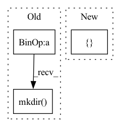

Pattern ID :21769
Before Change
self.uid = uid
self.datadir = datadir
self.logdir = task_logdir / "domains" / f"supervised_dataloader_{self.uid}"
self.logdir.mkdir(parents=True, exist_ok=True)
self.base_dataset = kwargs["dataset"]
self.dataloaders = self.pick_dataloader(self.config)After Change
super().__init__()
self.config = kwargs
self.dataloaders = {}
for purpose in ["train", "val", "test"]:
dataset = OfflineHdf5Dataset(hdf5_dataset_path=pathlib.Path(self.config["dataset_path"]), purpose=purpose)
self.dataloaders[purpose] = DataLoader(dataset=dataset,
batch_size=self.config["batch_size"],In pattern: SUPERPATTERN
Frequency: 3
Non-data size: 3
Instances Fragment ID: 69406931
Project Name: mstoelzle/solving-occlusion
Commit Name: a2670446fbd793b4fc7433dc59771326bb74e669
Time: 2020-09-03
Author: maximilian@stoelzle.ch
File Name: src/dataloaders/supervised_dataloader.py
M Class Name: SupervisedDataloader
N Class Name: SupervisedDataloader
M Method Name: __init__(1)
N Method Name: __init__(4)
M Parent Class: BaseDataloader
N Parent Class: BaseDataloader
M File Name: src/dataloaders/supervised_dataloader.py
N File Name: src/dataloaders/supervised_dataloader.py
M Start Line: 20
M End Line: 33
N Start Line: 14
N End Line: 26
Before Change
all_fps = [train_rgbs, val_rgbs, test_rgbs]
// prepare and execute file copying
out_path = Path("data").absolute() / "synpick_vid_{}".format(int(time.time()))
out_path.mkdir(parents=True)
all_out_paths = [(out_path / "train" / "rgb"), (out_path / "val" / "rgb"), (out_path / "test" / "rgb")]
copy_imgs(all_fps, all_out_paths)
After Change
train_eps = train_eps[:cut]
// split rgb files into train and val by episode number only , as we need contiguous motions for video
train_rgbs, val_rgbs, train_segs, val_segs = [] , [], [], []
for rgb, seg in zip(rgbs, segs):
ep = int(Path(rgb).parent.parent.stem) + 1
if ep in train_eps: Fragment ID: 69406930
Project Name: ais-bonn/vp-suite
Commit Name: ee1627faf59f835bdcd0693752c2eeb413c5c02c
Time: 2021-07-22
Author: boltres@ais.uni-bonn.de
File Name: scripts/prepare_synpick.py
M Class Name: AnonimousClass
N Class Name: AnonimousClass
M Method Name: prepare_synpick_vid(1)
N Method Name: prepare_synpick_vid(1)
M Parent Class:
N Parent Class:
M File Name: scripts/prepare_synpick.py
N File Name: scripts/prepare_synpick.py
M Start Line: 65
M End Line: 90
N Start Line: 54
N End Line: 82
Before Change
with pytest.raises(ValueError):
ontology_matcher.create_phrasematchers(json_loc)
// subdir of files: ignore non-parquet files
sub_dir = d / "subdir"
sub_dir.mkdir()
_create_parquet_file(sub_dir / "file1.parquet")
Path(sub_dir / "file2.json").touch()
_create_parquet_file(sub_dir / "file3.parquet")
ontology_matcher.create_phrasematchers(sub_dir)After Change
def test_initialize():
nlp = English()
config = { "parser_name_to_entity_type": {}}
ontology_matcher = nlp.add_pipe("ontology_matcher", config=config)
assert isinstance(ontology_matcher, OntologyMatcher)
// no matcher rules are defined
nlp.initialize() Fragment ID: 69406933
Project Name: astrazeneca/kazu
Commit Name: 7d55fc8a598da99313e9ffb777f000cebfe906c3
Time: 2022-11-30
Author: elliot.ford@astrazeneca.com
File Name: kazu/tests/test_ontology_matching.py
M Class Name: AnonimousClass
N Class Name: AnonimousClass
M Method Name: test_initialize(0)
N Method Name: test_initialize(0)
M Parent Class:
N Parent Class:
M File Name: kazu/tests/test_ontology_matching.py
N File Name: kazu/tests/test_ontology_matching.py
M Start Line: 50
M End Line: 84
N Start Line: 29
N End Line: 36